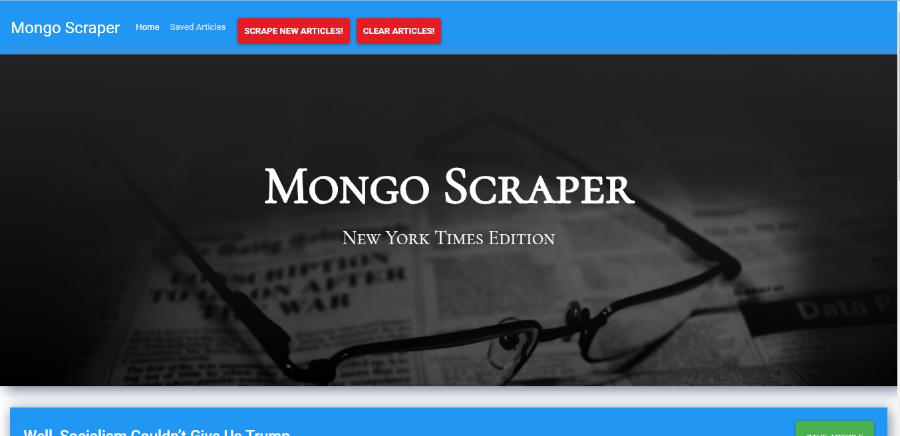

Portfolio
Fashion House

Technologies used:- React-redux,React,Passport[for authentication],Bootstrap,Materialize[For styling] ,NodeJS,Mongod,Express
API's Used:- Omdb API,food2fork API for getting food recipies,Google book API
A full MERN stack project.It is a online clothing shopping portal ,a small version of amazon like website.
App link
Github repo
Muse App

Technologies used:- Bootstrap,HTML,Cards, Modal,Susy,Express.js,Handlebars,Heroku (Cloud platform),JawsDB (Heroku database add-on),MySQL,Node.js,Sequelize (ORM)
Muse App, that is a multipurpose app or mood enhancing app for an entertaiment purpose .This App provde many suggestions to the user such as movies,games,books,cooking recipes.And also users can post new movies.
App link
Github repo
Pic Your Poison

Technologies Used: HTML5,CSS bootstrap,Javascript,Jquery,Firebase,Ajax
API's Used: Face++,Cocktail Database
A fun, interactive way to discover new drink-recipes! Pic Your Poison allows users to upload their photos, and by using facial recognition API, and a cocktail Database; discovering their perceieved emotion- with a drink to go with it. Socially conscious? No. Fun? Yup. Mobile-based!
App link
Github repo
Mongo Scraper
Technologies Used:- Node.js,Express.js,MongoDB,Mongoose,Handlebars.js,Javascript,jQuery
New York Times Mongo Scraper is a a web app that lets users view and leave comments on the latest news from the New York Times.